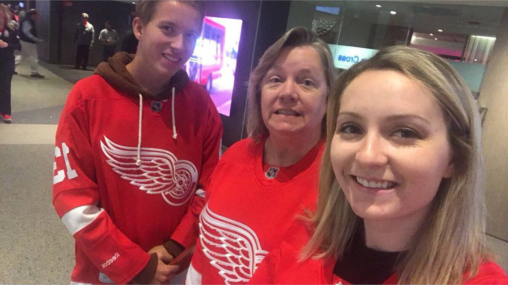
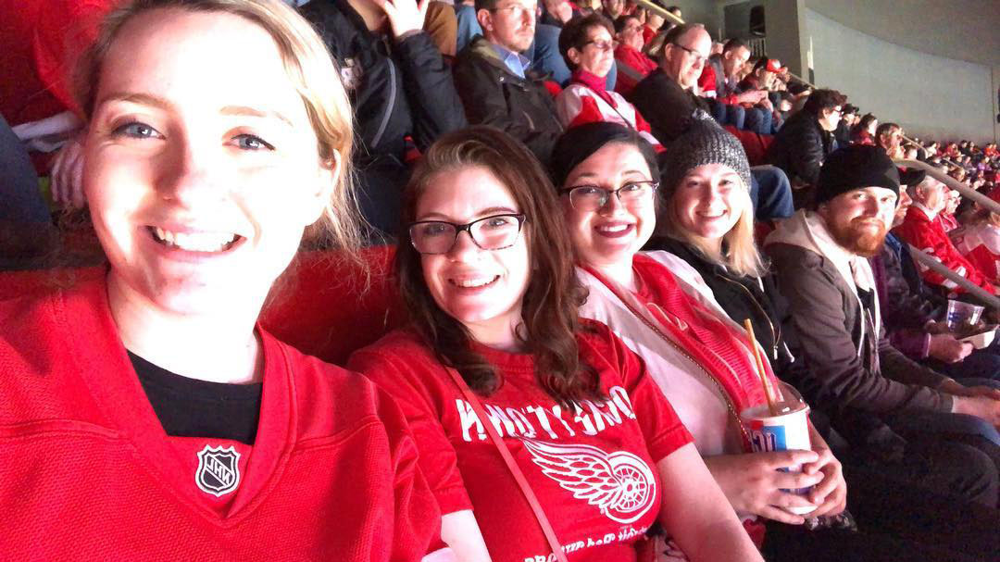

About Me
Information about me
I am a 2nd year Ph.D student in the Department of Physics and Astronomy at UC Irvine. I completed and received a Bachelor of Science in Physics from Wayne State University. I've been interested in space for as long as I can remember. My interests definitely peaked when I was in elementary school and my mom bought me a space atlas. I took my first physics class in high school and as soon as I learned I could combine physics and space to make astrophysics the decision on what I wanted to do was made.
Outside of physics I enjoy just generally being outdoors. I enjoy going to hockey games to watch my favorite team, the Detroit Red Wings, especially when they play local teams.
Pictures


TEXT HERE
aboutme4
TEXT HERE
TEXT HERE